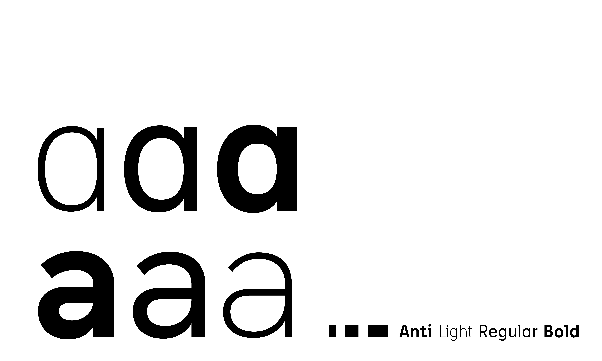

Anti is your friendly neighborhoud typeface. Being very intrigued by grotesque designs, signs and letterings I combined different characteristics I found throughout my research to create a new, unique but still familiar look and feel.
Having the right amount of personality it is perfect for headlines while at the same time being a sturdy companion for body text as well.
It’s currently a work in progress looking at an extension of the glyph set to support as many languages using the latin alphabet as possible.
